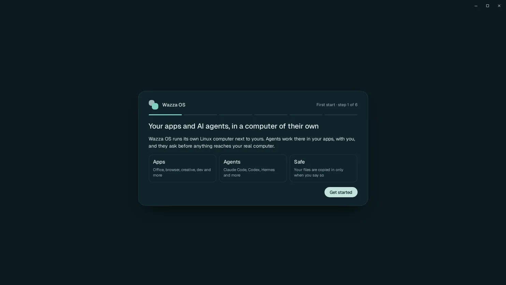
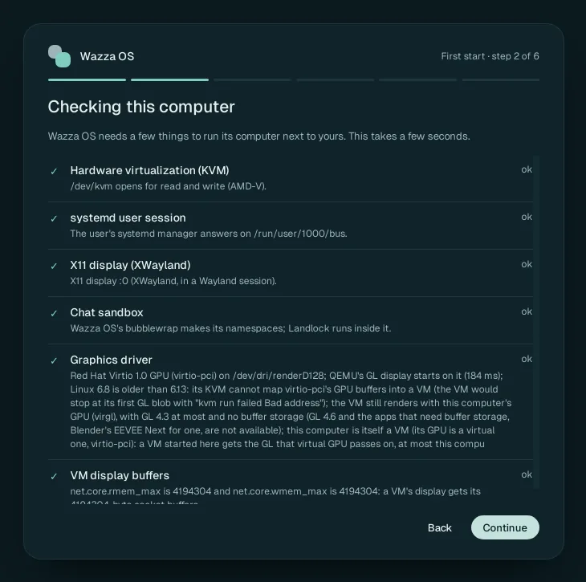
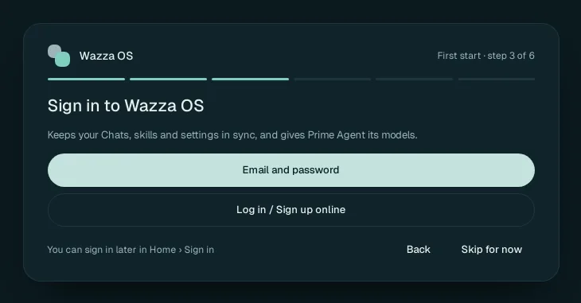
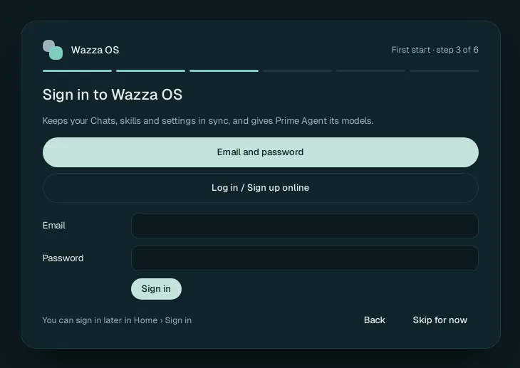
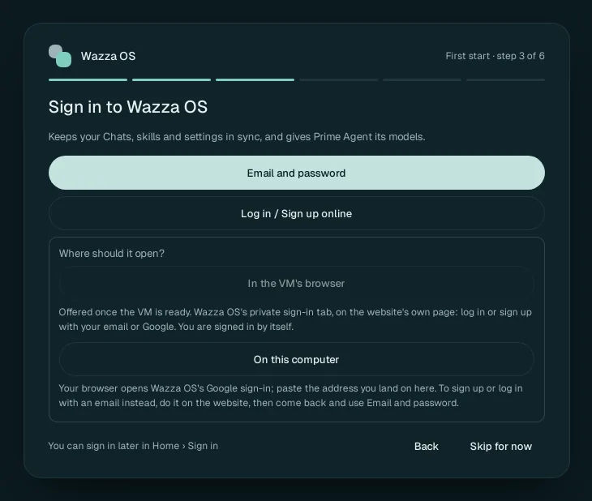
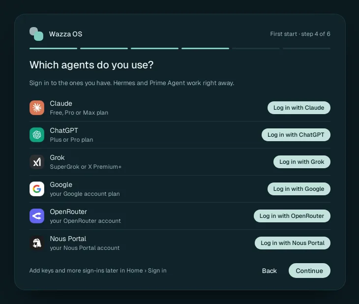
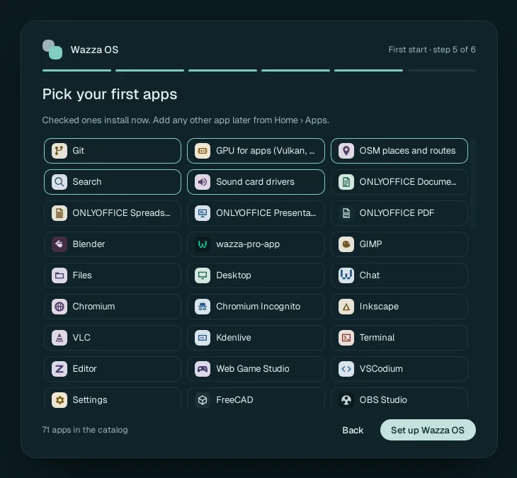
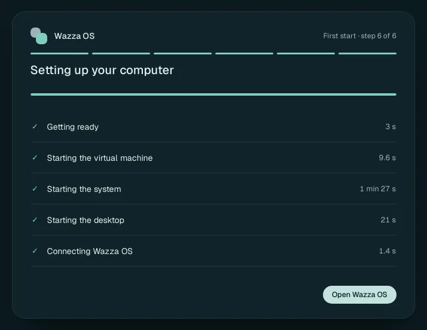

The first start
The very first time you open Wazza OS, six short steps check your computer, offer to sign you in, ask which AI agents you use, let you pick your first apps and set up Wazza OS's own computer (its virtual machine). It takes about 2 minutes. Every later start takes about 1 minute and goes straight to your tabs.
Every step except the first has Back: you go to the step before with every choice kept. Nothing you pick in these steps is final, and you can skip everything that is optional (signing in, the agent logins, the extra apps): Wazza OS works without them, and you add them later.

Step 1: Welcome#
The first card says what Wazza OS is: your apps and AI agents, in a computer of their own. Wazza OS runs its own Linux computer (a virtual machine, "the VM") next to yours. Agents work there, in your apps, with you, and they ask before anything reaches your real computer.
 1
2
1
2The counter and the six bars at the top show where you are: First start · step 1 of 6.
Click Get started.
The three tiles sum up what you get: Apps (office, browser, creative, developer apps and more, installed in the VM), Agents (Claude Code, Codex, Hermes and more, working in those apps) and Safe (your files are copied into the VM only when you say so; see Privacy and security).
Step 2: Checking this computer#
Wazza OS checks, in a few seconds, the six things it needs to run its VM next to your computer. Each line shows what it found and ok, limited or missing. When something is not right, the line says what it means and how to fix it (a command to run, or a setting).

1 2 3Each check has a mark: ✓ present, ! limited (Wazza OS works with less), ✕ missing (something does not work until you fix it).
Its state in words on the right: ok, limited or missing.
Click Continue once the check has answered (the button stays grey while it runs).
What is checked, and what to do when a line is not ok#
| Check | Why Wazza OS needs it | When it is missing: the fix the check gives |
|---|---|---|
| Hardware virtualization (KVM) | Wazza OS's VMs run only with KVM. Without it they do not start. | Turn on Intel VT-x or AMD-V (SVM) in the computer's firmware settings (UEFI/BIOS), then restart. If
/dev/kvm exists but your account cannot open it: sudo usermod -aG kvm "$USER", then log
out and back in. If the module is not loaded: sudo modprobe kvm_intel or sudo modprobe kvm_amd.
Inside a VM: turn on nested virtualization in the computer that runs it. |
| systemd user session | Each VM runs in a memory-capped scope of your user's systemd manager. | Start Wazza OS from your desktop session (log in through the login screen), not from su,
sudo or a bare SSH session. On a server: loginctl enable-linger "$USER" keeps your user
manager running without a login (see On a server). |
| X11 display (XWayland) | The Wazza OS window and the VM's panes are X11 windows; in a Wayland session that is XWayland. Without a display Wazza OS does not open (on a server, Wazza OS makes its own virtual screen). | Install your distribution's XWayland package, turn XWayland on in your compositor (Hyprland:
xwayland { enabled = true }; Sway: xwayland enable), then log out and back in. |
| Chat sandbox | Every Chat that runs on your computer (not in the VM) runs inside Wazza OS's sandbox (bubblewrap and Landlock), or does not start. | On Ubuntu: sudo apparmor_parser -r /etc/apparmor.d/wazza-bwrap loads Wazza OS's AppArmor rule. If the
kernel refuses user namespaces: sudo sysctl -w kernel.unprivileged_userns_clone=1 (and the same line in
/etc/sysctl.d/60-wazza-userns.conf to keep it). If the sandbox file is missing: reinstall Wazza OS.
Limited means Chats run under Landlock alone, with less isolation. |
| Graphics driver | The VM draws its apps on your computer's graphics card. Without a usable card the VM starts with software graphics (slower), by itself. | Intel and AMD: the kernel's driver (i915/xe, amdgpu) with Mesa; NVIDIA: its driver 495 or newer with
sudo modprobe nvidia-drm. If the card exists but your account cannot open it:
sudo usermod -aG render "$USER", then log out and back in. Or set
VM resources › Graphics › GPU to None (CPU only). |
| VM display buffers | The VM's picture travels over a socket that needs 4 MiB buffers. Below that, VMs do not start. | sudo sysctl -w net.core.rmem_max=4194304 net.core.wmem_max=4194304. The package installs
/usr/lib/sysctl.d/60-wazza.conf, which sets it at every boot; reinstall Wazza OS if that file is missing. |
You can run the same check at any time: Settings › This computer › Check,
or in a terminal wazza --check (see The command line).
The first start does not stop you. But a missing line means that part does not work (for example no KVM: the VM does not start). Fix it first, then click Continue.
Step 3: Sign in to Wazza OS (optional)#
A Wazza OS account keeps your Chats, skills and settings in sync between computers, and gives your agents Wazza OS's own models (Prime Agent uses them; new Chats start on MiMo once you are signed in). You can skip it and sign in later in Home › Sign in.

1 2 3Email and password opens the sign-in form below the buttons, for an account you already have.
Log in / Sign up online asks where to open the website's sign-in (for a Google account, or to create an account).
Skip for now goes on without an account. The note at the bottom left reminds you: You can sign in later in Home › Sign in.
Sign in with email and password#

1 2 3Type your account's email.
Type your password (Enter also signs in).
Click Sign in. The card says Signing in…, then Signed in., and the next step comes by itself. A wrong password or a network problem is shown in red under the form, in the server's own words; the password field is emptied every time.
Log in or sign up online#

1 2In the VM's browser: the website's own sign-in page opens in Wazza OS's private sign-in tab, where you log in or sign up with your email or Google; you are signed in by itself. The VM must be running for this, so during the first start the button says Offered once the VM is ready. When you pick it, the card notes that the online sign-in opens in Wazza OS's private sign-in tab once your computer is set up and goes on to the next step.
On this computer: your own browser opens Wazza OS's Google sign-in. When you land on the last page, copy its address from the browser's address bar and paste it in the field Wazza OS shows, then finish. To sign up or log in with an email instead, do it on the website, come back, and use Email and password.
Step 4: Which agents do you use? (optional)#
If you already pay for an AI plan, Wazza OS can use it: you log in once and your agents use your plan, with no API key. This step only notes which logins you want; each one opens after the setup, in Home › Sign in.

1 2Click Log in with … for each plan you have. The button turns into ✓ After setup; click it again to take it back.
Click Continue.
| Login | Plan it uses | Which agents can use it |
|---|---|---|
| Claude | Free, Pro or Max plan | Claude Code only |
| ChatGPT | Plus or Pro plan | Every agent: Codex, Hermes and Prime Agent with their own sign-in; Claude Code and Antigravity through Wazza OS's gateway |
| Grok | SuperGrok or X Premium+ | Every agent |
| Your Google account plan | Antigravity only | |
| OpenRouter | Your OpenRouter account | Every agent |
| Nous Portal | Your Nous Portal account | Hermes only |
The card also says Hermes and Prime Agent work right away: they need no login of their own. They still need a model to talk to: a Wazza OS account, one of these plans, or an API key. The published Wazza OS includes no shared key, so without any of the three a Chat has no model; see Sign in, plans and API keys.
Step 5: Pick your first apps#
The apps you check here are installed in the VM while it starts. You can install any other app later from Home › Apps.

1 2 3 4The apps with a light border are Wazza OS's own defaults: they are always installed and cannot be unchecked (Git, GPU for apps: Vulkan, OpenCL and OpenGL support, OSM places and routes, Search, Sound card drivers; Wazza OS also installs the ffmpeg media tools with them).
Click any other app to add it (click again to take it back).
The number of apps in the catalog (71 in this version).
Click Set up Wazza OS.
Each app you add takes time and disk space in the VM. Pick only what you will use today: every app stays one click away in Home › Apps.
Step 6: Setting up your computer#
The last card follows the VM's start, stage by stage, each with the time it took.

1 2The stages, in order:
- Getting ready: Wazza OS prepares the VM's disk and settings.
- Starting the virtual machine: the VM is switched on.
- Starting the system: the VM's Linux boots (the longest stage on a first start).
- Starting the desktop: the VM's desktop, where your apps draw, comes up.
- Connecting Wazza OS: Wazza OS connects to the VM (its files, apps and Chats).
Click Open Wazza OS. Before the VM is ready the button says Opens when your computer is ready…: click it anyway and Wazza OS opens by itself as soon as it is.
Wazza OS then opens Home on Apps, or on Sign in when you picked a sign-in or a login in steps 3 and 4 (each login you picked waits there for you). The apps you picked keep installing in the background; each one sends a notification when it is done (Home › Notifications).
After the first start#
- Every later start shows only the startup card (the stages of step 6) and then your tabs as you left them.
- Open a Chat and talk to an agent: Quick start.
- Connect a model if you skipped steps 3 and 4: Sign in, plans and API keys.
Run the first start again#
To see the six steps again without losing anything, run this in a terminal while Wazza OS is open, then quit and start Wazza OS:
$ wazza --gui setup reset-first-run
first start not done: Wazza OS shows its first start at its next startYour VMs, Chats, apps and sign-ins stay. To start from nothing instead (every VM, Chat, sign-in and setting erased), use Settings › This computer › Remove all data.
On a computer you set up from a script (or many computers), wazza --gui setup run --file setup.json
does the same choices without clicks: see The command line.